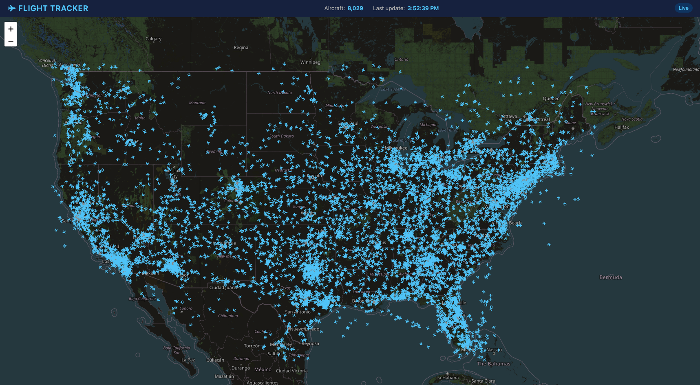
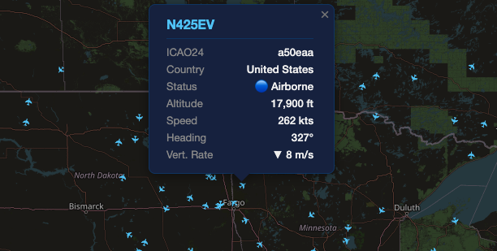

A real-time flight tracking application built with Java and Spring
Boot. Polls live ADS-B data from the OpenSky Network every two
minutes, persists aircraft positions to a PostgreSQL database on
Azure, and visualizes active flights on an interactive Leaflet.js
map with rotating aircraft icons and click-through popups showing
altitude, speed, heading, and vertical rate.
Every aircraft in controlled airspace continuously broadcasts its
own position, altitude, and velocity over ADS-B — a public,
unencrypted signal that anyone with a receiver can listen to. The
OpenSky Network aggregates those broadcasts from thousands of
volunteer receivers and exposes them through an API. This project
turns that firehose into something you can actually look at: a live
map of aircraft currently in the air, each icon rotated to its true
heading, each one clickable for the telemetry behind it.
I built it because I wanted a project that was genuinely
live rather than a static CRUD app — something with a real
external data source, real persistence, and real deployment
constraints. Every piece of it had to keep working while unattended:
the poller has to survive an API that intermittently rate-limits,
the database has to absorb a burst of writes every cycle without
starving the web requests, and the whole thing has to stay up on a
small Azure App Service instance. Those constraints turned out to be
where all the interesting engineering was.
A Spring @Scheduled poller fires every two minutes and
requests the current state vectors from the OpenSky Network API. The
Spring Boot backend maps that response onto JPA entities and writes
aircraft and position records to a PostgreSQL instance hosted on
Azure, upserting aircraft that are already known and appending new
position rows for the ones that have moved. A set of REST endpoints
exposes the most recent snapshot as JSON, and the Leaflet.js
frontend fetches from those endpoints to draw the map — one marker
per aircraft, rotated to its reported heading, with a popup bound to
each marker carrying altitude, ground speed, heading, and vertical
rate.
The whole application is containerized with Docker and deployed to
Azure App Service. A GitHub Actions workflow builds the image and
pushes the new revision on every merge to main, so deployment is
just a merge.
Dead reckoning
The map used to redraw only when a new poll landed, so aircraft sat
still between cycles and then jumped to their new positions. Dead
reckoning fixed that: between polls, the frontend projects each
aircraft forward from its last known ground speed and heading,
advancing the marker along its track and snapping back to truth
whenever fresh data arrives. The backend still polls OpenSky every
two minutes, but the map refreshes every 30 seconds off those
projections, so the aircraft glide the way they actually fly
instead of teleporting.
Technical challenges solved
The N+1 query problem
The first version of the map endpoint loaded a list of aircraft
and then lazily touched each one's positions, which made
Hibernate issue one query for the list plus one more per
aircraft — hundreds of round trips to satisfy a single page
load. Profiling the generated SQL made the pattern obvious. I
reworked the repository layer to fetch the data it actually
needed in one pass via an explicit join fetch and a projection,
which collapsed those hundreds of queries into a single query
and took the endpoint from visibly slow to instant.
Connection pool exhaustion under load
Under concurrent requests the app would stall and then start
throwing timeouts waiting for a connection. The cause was
connections being held far longer than the work required —
long-lived transactions spanning work that didn't need to be
transactional, on a pool sized for a much smaller App Service
tier. I tuned the HikariCP pool to match what the Azure
PostgreSQL instance could actually support and tightened
transaction boundaries so connections were borrowed for the
shortest possible window and returned immediately.
Application Insights classloader conflict
Enabling the Application Insights Java agent on Azure App
Service broke startup outright — the agent attaches before the
Spring Boot application and its instrumentation collided with
the executable JAR's nested classloader, failing in a stack
trace that pointed nowhere near the actual cause. Isolating it
meant reproducing the container locally and bisecting the agent
configuration until the conflict was identifiable, then
resolving the load order so telemetry and the application could
coexist.
Batch ingestion vs. transaction monopolization
Each poll cycle brings in thousands of state vectors at once.
Writing them inside one long transaction meant a single ingest
could hold its connection and locks for the duration, starving
the REST endpoints serving the map at exactly the moment users
were looking at it. I restructured ingestion to write in bounded
batches with JDBC batching enabled, so the poller commits in
chunks and releases its connection between them instead of
monopolizing the database for the length of the whole cycle.
What I learned
This was the project where the Spring ecosystem stopped being
magic. Working with JPA/Hibernate taught me what an ORM is actually
doing underneath — that an innocent-looking field access can trigger
a query, that fetch strategy is a design decision rather than a
default, and that reading the generated SQL is the fastest way to
understand your own code. Dependency injection went from an
annotation I copied to something I reach for deliberately, because
constructor-injected components turned out to be the reason I could
swap and test pieces in isolation.
The operational half taught me just as much. Docker made the "works
on my machine" gap concrete and then closed it. GitHub Actions
turned deployment from a nervous manual ritual into a merge. Azure
App Service taught me to read platform logs and to respect the
resource limits of the tier I'm actually paying for. And the
connection pool work gave me something I don't think you can learn
from a tutorial: database connections are a small, finite,
genuinely contended resource, and code that holds one a moment
longer than it needs to is a bug waiting for traffic.
Screenshots

Live national view — 8,029 aircraft in the air at once, each
icon rotated to its reported heading. The header tracks the
current count and the timestamp of the last successful poll.

Clicking any aircraft opens its telemetry — ICAO24 address, Tail Number,
origin country, airborne status, altitude, ground speed,
heading, and vertical rate.